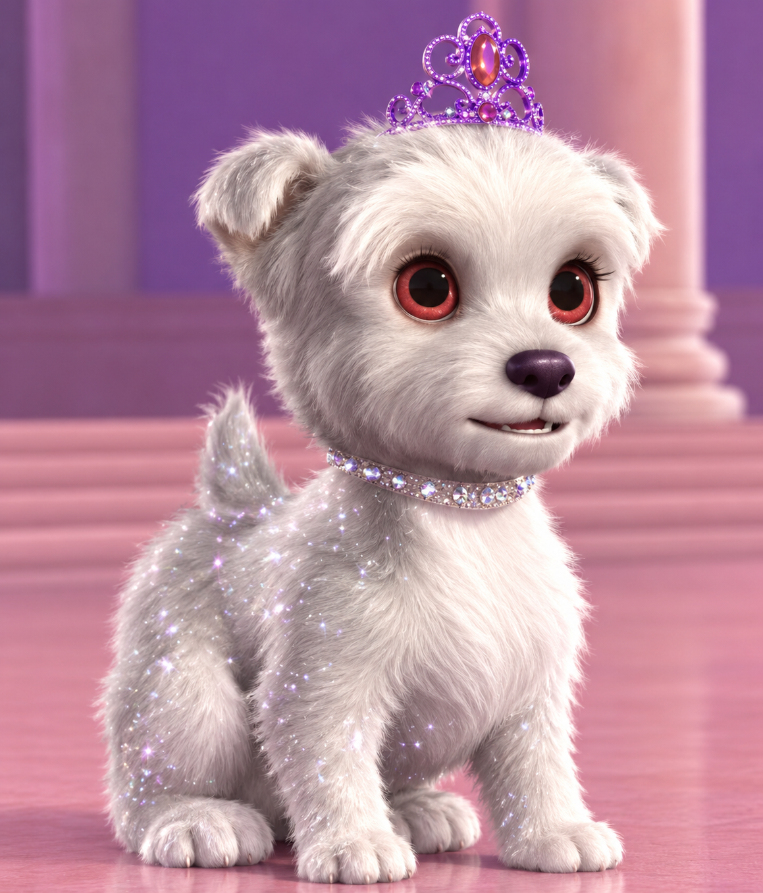

Lily
About
Lily is a West Highland terrier puppy. She is sweet and lively.
In the movie
Lily is found with Sparkles, and Alexa names her after the flower. She joins the adventure together with Sparkles.
Relationships
- Alexa: The girl who names and adopts her
- Sparkles: Her puppy friend
- Liana: Her co-owner
Fun facts
- Alexa named her after the flower lily.